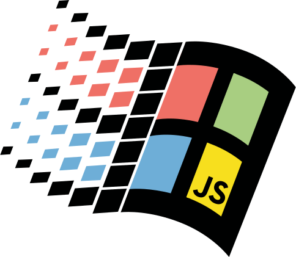

OS-GUI.JS
MenuBar
Application Window
Tool Window
Combined Application Example
This example shows an app window with a tool window and a menu bar.
The tool window shares focus with the parent app window, and always stays on top of it's parent.
Buttons
<button>Basic button</button> |
A normal command button. (Note: you should use verbs when possible. Labels here describe the button type for demo purposes.) | |
<button disabled>Disabled button</button> |
Use the standard disabled attribute to mark buttons as disabled. |
|
<button class="default">Default button</button> |
The default action that will be triggered if you hit Enter. The default should change to whatever button you tab to, or if you tab to another control in a form, return to the default default button. | |
<button class="toggle selected">Toggle button</button>
|
Toggle the selected class when clicked.
Examples: Start button, taskbar buttons, List/Details buttons in file open/save dialogs.
Tool buttons in Paint look a bit different.
|
|
<button class="lightweight" tabindex="-1">Lightweight button</button>
|
No border until hover. Used for menu and toolbar buttons. Generally not focusable. | |
<button class="lightweight" disabled tabindex="-1">Lightweight disabled</button>
|
Use the standard disabled attribute to mark buttons as disabled. |
Scrollbars
Insets & Outsets
<div class="inset-shallow"></div>
|
Examples: tray in taskbar, status bar sections, tool options in Paint, Length/Position boxes in Sound Recorder | |
<div class="outset-shallow"></div>
|
Examples: lightweight action buttons on hover | |
<div class="inset-deep"></div>
|
Examples: text inputs, content panes for pages in Help Topics or Internet Explorer | |
<div class="outset-deep"></div>
|
Examples: slider handle in Sound Recorder, buttons |
Crazy Animation Demo
Check out the interactive spaceship animation demo
A Full Web Desktop
98.js.org is a web-based recreation of the Windows 98 desktop, including Paint, Sound Recorder, Solitaire, and more.
The project that started it all
JS Paint is a detailed clone of MS Paint from Windows 98, with many extra features.